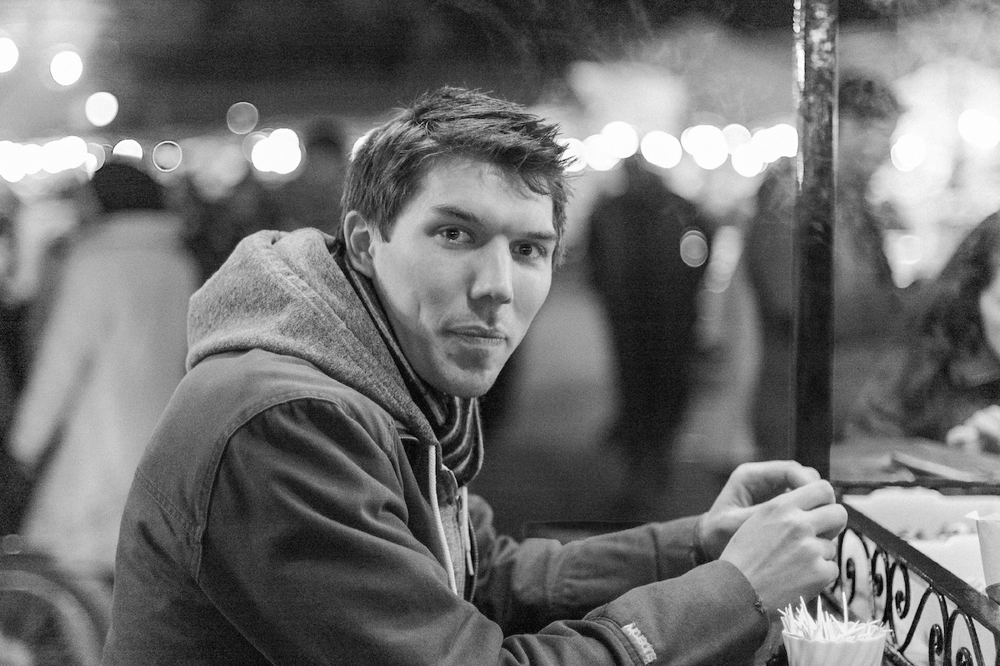

I'm a product designer, leader and mentor with more than 15 years' experience helping organisations shape ideas into successful products and services. I'm a passionate advocate for cross-functional collaboration with a proven ability to build strong relationships across design, engineering, and product. I excel at delivering elegant solutions to large, complex problems, and my work has reached tens of millions of users worldwide through engagements spanning start-ups, Fortune 500 companies and government bodies.
Previous clients include the BBC, the BRIT Awards, BT Sport, Danone, DC Thomson, Eurostar, iA, Internazionale, JATO, NHS, Softr, Spektrix, Spotlight, Typeform and Virgin Galactic.
This version of the website is powered by the Hugo static site generator. The type is set in Circular by Lineto Foundry. Simple, anonymised analytics are provided by Cabin.
If you dig around, you’ll find various older versions of the site from over the years.